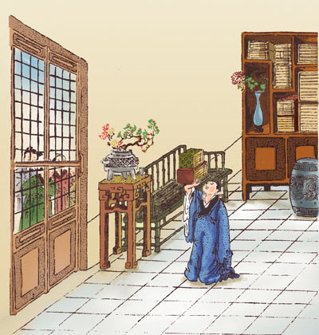

缪彤自挝

汉朝时候。有一个人。姓缪单名叫做彤。表字豫公。他在幼小年纪的时候。早已没有了他的父亲。兄弟四个人。一同住在一块儿。等到后来各自娶了妻子。这几个妇女们就要请求均分家产。已经有好几次了。甚至于屡次有争闹的言语发生。缪彤听见了很感愤叹息。就关了门。自己打着自己说道。缪彤呀缪彤。你勤修身体。谨慎行为。学了圣贤人的法则。想去整齐世界上的风俗。为什么不能够去正了自己的家庭呢。他的弟弟们和那几个妇女听到了。就都在门外叩着头、谢了罪。缪彤才开了门出来。从此以后。他们一家的男男女女。就更加敦好和睦。